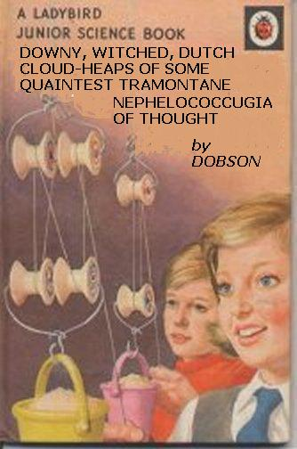

Friday, March the 12th, 2004
back to: title, date or indexes
This familiar phrase, which appears in the quotation from M. P. Shiel above, was also the title of one of Dobson's more readable works, and the only one to find a publisher in his lifetime. (All those pamphlets of his were, of course, cranked out on Marigold Chew's dilapidated printing press.) During the early 1950s, after spending some time as a pin-the-paper-to-the-cardboard instructor at the Pang Hill Orphanage, Dobson became interested for the first time in writing pedagogic works for urchins. The early attempts were not a success. In a burst of ludicrous enthusiasm, he produced a series of ten “Tracts For Tinies” (including the now justly-admired Hideous Execution Practices Of The Blood-Drenched Corsairs, Ten Easy Steps To Grooming Your Cormorant, and My Nightmares About Emily Dickinson), but sales were few, and most of the copies ended up being used as hot air balloon ballast. Late in 1958, however, a janitor who worked for Ladybird Books picked up a copy of A Brief & Bewildering History Of Helsinki in a charity shop, read it with glee, and showed it to one of the firm's editors, who immediately tracked down the elusive pamphleteer. Commissioned to write a book for the Junior Science series, and given carte blanche regarding his subject-matter, Dobson scribbled down this tremendous text in just three hours. Sadly, it is now out of print.
